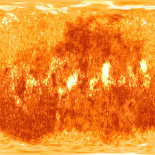
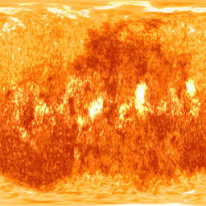
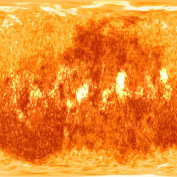

//Definimos el body
//Creamos nuestra escena A-frame y le agregamos el componente AR-toolkit (Artoolkit es el que nos permite localizar el marker con la cámara)

//Acá marcamos el tipo de marker que queremos (puede ser hiro o kanji)
 
